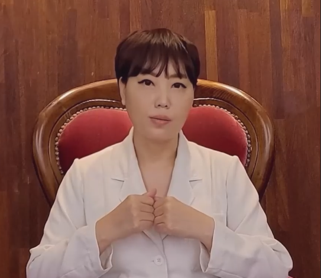

조옥형 박사 메시지
따뜻한 마음을 받은 만큼, 두 가지 원칙을 지키겠습니다.
- 상담료가 다른 상담실보다 높다고 느껴질 수 있지만, 짧은 기간 내에 높은 효과를 목표로 하기에 만족감이 크다는 평가를 받고 있습니다. 200개의 후기가 이를 보여줍니다.
- 부부마다의 상담 목표에 맞는 치료 기술을 적용하여, 위기의 관계를 부부가 원하는 관계로 회복할 수 있도록 돕겠습니다.
부부상담 · 심리상담 클리닉
연세부부상담클리닉따뜻하지만 정확한 회복 상담
안녕하세요. 조옥형 박사입니다. 26년 동안 11,500명의 사람들을 상담하며 9,000명 이상을 치료해온 경험을 바탕으로, 부부가 원하는 관계의 방향을 다시 찾을 수 있도록 돕겠습니다.
센터 이야기
높은 만족도로 소개를 통해 직접 찾아주시는 분들이 300팀이 넘습니다. 부부마다 다른 갈등의 모양을 세밀하게 살피고, 그 관계가 원하는 방향으로 움직일 수 있도록 집중도 높은 상담을 진행합니다.
조옥형 박사 메시지
상담 안내
반복 갈등, 외도, 섹스리스, 의심, 고부갈등, 침묵과 별거, 우울과 불안까지 부부 문제와 개인 심리 문제를 함께 다룹니다.
반복되는 다툼, 외도, 의심, 감정 소진, 섹스리스, 침묵과 별거를 다룹니다.
짜증, 지침, 외로움, 모욕감, 버려진 느낌, 무가치감, 공허함을 함께 살핍니다.
우울, 두려움, 의존, 강박, 질투, 화병, 공황, 불면, 대인관계 문제를 상담합니다.
대화만 반복하는 상담이 아니라, 게슈탈트·역할극·싸이코드라마 등 필요한 기법을 적시적소에 적용해 실제 변화로 이어지도록 돕습니다.
연세가 드리는 약속
단순히 누가 옳고 그른지를 가리는 것이 아니라, 왜 같은 문제로 반복해서 상처를 주고받는지 구조를 살피고 회복의 언어를 다시 찾는 과정에 집중합니다.
심리치유의 시작점
“나는 상대방의 어떤 말에 감정이 상하는가?” “왜 화가 나는가?” “배우자에게 화가 났을 때 어떤 반응을 하는가?” 같은 질문은 관계 회복의 출발점이 됩니다. 자신의 감정 포인트를 알아야, 배우자와도 정확한 대화를 시작할 수 있습니다.
작은 차이가 결혼 생활의 행복과 불행을 가를 수 있습니다. 자신을 돌아보고, 배우자와 이성적으로 대화하는 것이 무엇보다 중요합니다.
2003년 개원 이후 다양한 사례를 꾸준히 다뤄온 전통 있는 심리치료클리닉입니다.
부부의 목표와 위기 정도에 따라 적절한 기법을 선택해 집중적으로 개입합니다.
월요일부터 일요일, 공휴일 포함 오전 8시부터 밤 11시까지 예약 가능합니다.
소개를 통해 직접 찾아주시는 분들이 많은 만큼, 조옥형 박사가 책임 있게 상담합니다.
핵심 접근 방식
감정만 다루거나 조언만 하는 방식이 아니라, 관계 구조와 감정의 흐름, 실제 대화 방식까지 함께 다룹니다.
반복되는 다툼의 패턴, 감정의 시작점, 상처가 쌓이는 구조를 먼저 정리합니다.
짜증, 모욕감, 외로움, 불안, 분노가 어떻게 대화를 망가뜨리는지 함께 다룹니다.
부부가 실제로 원하는 관계 목표를 세우고, 그 방향으로 행동과 대화를 바꿔갑니다.
상담 진행 순서
상담 내용과 효과에 따라 회차별 시간을 조정하며, 원칙적으로는 부부가 함께 상담받고 필요 시 일부 시간을 개별상담으로 나누어 진행합니다.
01
전화, 문자, 카카오톡으로 편하게 연락 주시면 일정을 조율합니다.
02
1차와 2차는 보통 1주일 간격으로 진행하며 현재의 갈등 구조를 파악합니다.
03
1시간 30분씩 3회, 또는 2시간과 1시간 30분, 1시간 구성 등으로 조정합니다.
04
2차 이후의 효과를 보고 3차 이후 간격을 정해 관계 변화를 확인합니다.

연세대학교 재활학과 학사, 경북대학교 아동가족학과 상담 전공 석사·박사를 졸업했으며, 대학 외래교수와 정신건강전문요원 슈퍼바이저, 성폭력전문상담사 양성과정 교수 등을 역임했습니다.
학력 및 주요 경력